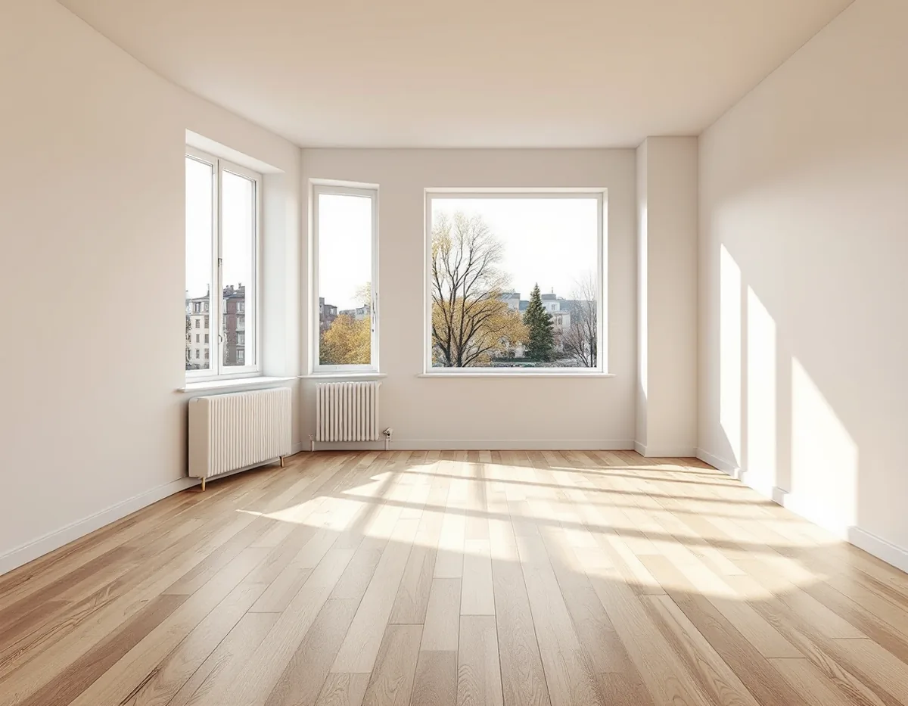
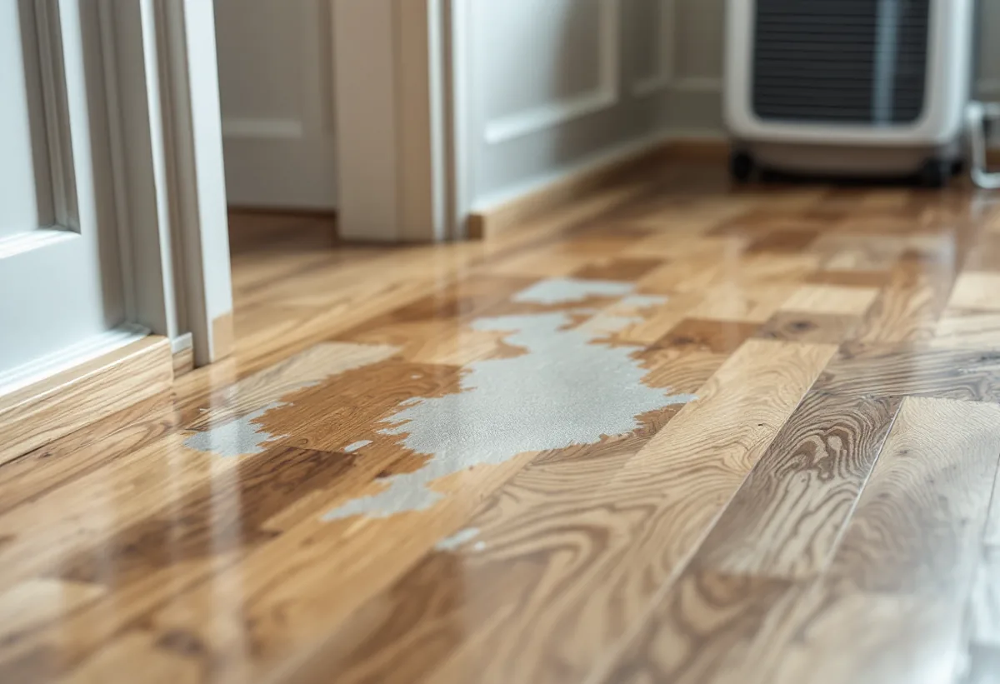

Kontakt
Du berättar om du bor i bostadsrätt, hyresrätt eller radhus, och om golvet har varit utsatt för vatten.
I Kista ligger de flesta bostäderna i flerbostadshus, och då är frågan om golvet inte bara hur det ska slipas utan vem som bestämmer över det. Bostadsrätt, hyresrätt och nyproduktion har olika regler, och efter en vattenskada blir frågan om ansvar ännu viktigare. Geal Entreprenad AB slipar och ytbehandlar trägolv i lägenheter och radhus i Kista med omnejd, och vi hjälper dig att reda ut vad som gäller innan arbetet börjar.

Stadens områdesfakta för 2025 visar hur olika upplåtelseformerna fördelas. Kista har 7 893 bostäder, varav 3 981 bostadsrätter, 2 801 hyresrätter utanför allmännyttan och 629 i allmännyttan. 971 bostäder ligger i småhus. Antalet lägenheter i flerbostadshus ökade från 4 879 till 5 318 på ett år. Akalla har 4 123 bostäder, varav 2 884 bostadsrätter och 671 i småhus, medan Husby har 4 993 bostäder, varav 2 369 i allmännyttan och 909 bostadsrätter.
Stadens vägledning Varsam utveckling av småhus- och villaområden nämner Akalla och Husby bland de storskaliga stadsdelarna med gruppbyggda småhusområden. Bristen på bostäder blev allt större i början av 1960-talet, och målet var en miljon nya lägenheter fram till och med 1974. Småhusen i de storskaliga stadsdelarna var huvudsakligen radhus och kedjehus, men det förekom även villor och atriumhus, bland annat i Akalla.

Enligt bostadsrättslagen ska bostadsrättshavaren på egen bekostnad hålla lägenheten i gott skick, om inte annat har bestämts i stadgarna. Att slipa ett golv nämns inte i lagens uppräkning av åtgärder som kräver tillstånd. Styrelsens tillstånd krävs enligt lagen för bland annat ingrepp i bärande konstruktion, ändrade ledningar och ventilation och annan väsentlig förändring av lägenheten. För en lägenhet med särskilda kulturhistoriska värden krävs alltid tillstånd för en åtgärd som påverkar ett sådant värde.
Stadgarna kan ha egna regler, så läs dem innan du bokar. Om grannar, damm och arbetstider finns det mer på sidan om golvslipning på Kungsholmen.
För rotavdraget kräver Skatteverket att arbetet görs innanför bostadens väggar, tak och golv och att du har underhållsansvaret enligt stadgarna. Att färdigställa en nyproducerad lägenhet ger inte rotavdrag. För en bostadsrätt i ett hus med flera lägenheter skriver Skatteverket att skattereduktion kan ges för ombyggnad och tillbyggnad när lägenheten är färdigställd.
Jordabalken ger hyresgäster rätt att på egen bekostnad utföra målning, tapetsering och därmed jämförliga åtgärder i lägenheten. Minskar lägenhetens bruksvärde har hyresvärden rätt till ersättning för skadan. Golvslipning nämns inte i lagtexten. Bor du i hyresrätt bör du därför stämma av med hyresvärden innan golvet slipas.
Skatteverkets regler för rotavdrag är uppdelade på småhus, bostadsrätt och ägarlägenhet. Hyresrätt finns inte med bland de bostadstyperna.
Bostadsrättslagen säger att bostadsrättshavaren svarar för reparationer på grund av vattenledningsskada bara om skadan har uppkommit genom egen vårdslöshet eller försummelse, eller genom någon i hushållet, en gäst eller någon som utför arbete åt bostadsrättshavaren. Kontakta därför föreningen innan något rivs eller slipas efter en vattenskada.
Svenska Byggnadsvårdsföreningen har beskrivit en bostadsrätt från 1961 där vatten runnit ner från våningen ovanför och in under en välbevarad parkett. Golvet var troligen en lamellparkett i holländskt mönster, limmad på två meter långa spontade plywoodbrädor. Ett noggrant limmat golv är svårt att ta upp utan att sponten eller fjädern skadas. Ligger golvet flytande går det däremot ibland att lyfta hela golvskivan från en dörröppning för inspektion och torkning, sedan golvsocklarna har tagits bort.
I ett annat svar, om en parkett som har blivit gråfärgad av vatten, skriver föreningen att en slipning tar bort cirka 0,5 till 1 millimeter, så djupare märken kan synas kvar. Ska golvet i stället bytas finns det mer under golvläggning.
Du berättar om du bor i bostadsrätt, hyresrätt eller radhus, och om golvet har varit utsatt för vatten.
Vi ser efter vilken sorts golv det är, hur det är lagt och hur mycket som går att slipa.
Slipning och ytbehandling står som egna poster, liksom eventuell lagning.
Du stämmer av med föreningen eller hyresvärden innan vi bokar datum.
Golvet slipas i flera steg med maskin med dammsugning.
Lack eller olja läggs på, och möblerna kan bäras in när ytan har torkat.
I en bostadsrätt ges rotavdrag för att slipa golv när du har underhållsansvaret enligt stadgarna. I ett radhus eller en villa som du äger ska huset användas som bostad.
Avdraget är 30 procent av arbetskostnaden, högst 50 000 kr per person och år och högst 75 000 kr tillsammans med rutavdrag. Material och resor ger inget avdrag. Geal drar avdraget direkt på fakturan när det gäller.
Golvytan, golvtypen, om det finns skador efter vatten som ska lagas och vilken ytbehandling du väljer. Efter ett gratis platsbesök får du ett skriftligt kostnadsförslag.
Parkett, trägolv, klinker och slipning.
Golvläggning i Stockholm →Takbyte, takbesiktning och plåtarbeten.
Takläggare i Kista →Radhusen, föreningen och ventilationen.
Badrumsrenovering i Kista →Uterum, altan och föreningens tillstånd.
Byggföretag i Kista →Radhus, atriumhus och husgruppen.
Fasadmålning i Kista →1970-talets radhusfönster.
Fönsterrenovering i Kista →Småhus i förening och kök från 1970-talet.
Köksrenovering i Kista →1970-talets hus, asbest och ROT.
Målare i Kista →Garderober, väggar och dörrar i lägenheten.
Snickare i Kista →Platta tak och pulpettak.
Takbyte i Kista →